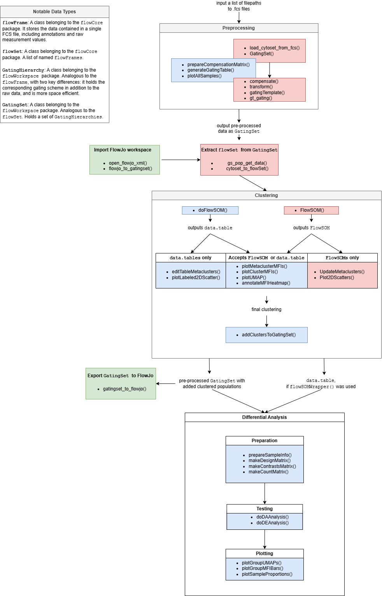

flowFun
flowFun.RmdTo improve the accessibility of the package, flowFun
provides a number of template scripts for users to make getting started
less daunting. When viewing the GitHub page, these may be found in the
\scripts folder.
flowFun was also designed to allow users to easily
import and export data at any stage of the analysis. This page will give
a brief overview of the pipeline and how users may import their data at
each step. The diagram below summarizes each function relevant to the
package, and which step they fit into.

The most important data type in this pipeline is the
GatingSet, which comes from the flowWorkspace
package. Users who have performed flow analysis in R before may be
familiar with the flowSet, which is quite similar. Both
store all raw data from a set of FCS files, but GatingSets
are more advantageous for a few reasons. For one, in addition to the raw
data, GatingSets can hold information about
transformations, compensations, and gating schemes that are applied
during analysis. Instead of having multiple sets of FCS files
corresponding to raw data, preprocessed data, various subsets, etc.,
this data structure conveniently keeps everything in one place.
Additionally, GatingSets are far more memory efficient
than flowSets. Rather than always having the full dataset
loaded in memory, a GatingSet contains only a pointer to
the data, which is stored compactly in C data structure. This makes
performing operations on large datasets faster. Users who want to learn
more should see the flowWorkspace documentation, which
contains multiple helpful vignettes giving a more detailed overview of
GatingSets.